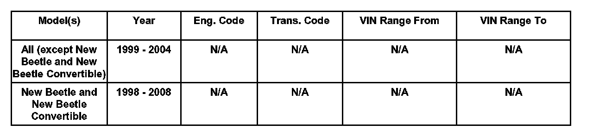
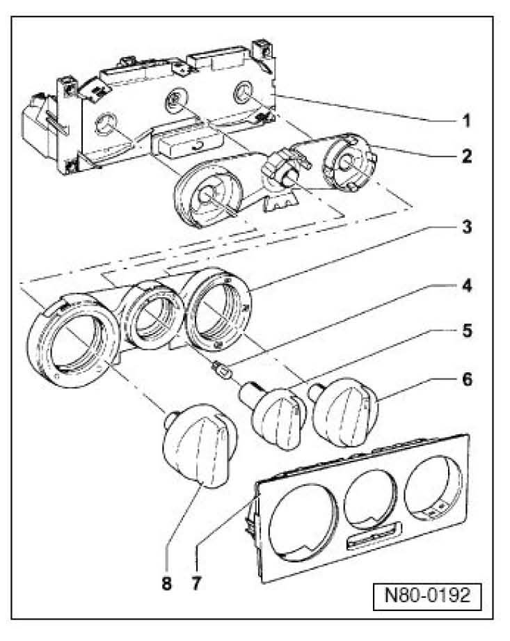
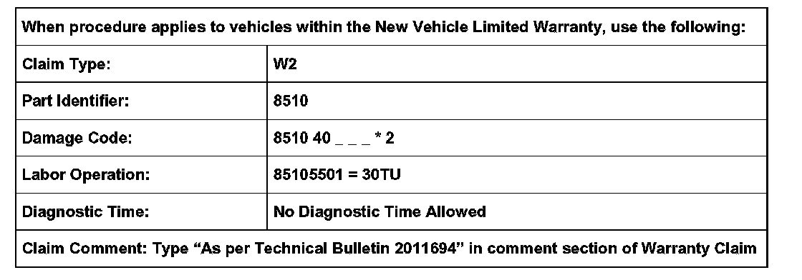
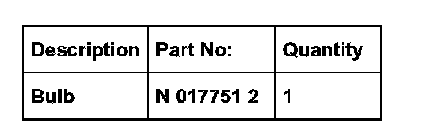

A/C - Fresh Air Lever Light Inoperative
80 07 02Mar. 20, 2007
2011694
Supersedes T.B. Group 80 Number 06-02 dated March 3, 2006 due to additional New Beetle, New Beetle Convertible model years.

Affected Vehicles
Condition
Heating and Ventilation Controls, Replacing Fresh Air Control Lever Light -L16-
Heating and ventilation control assemblies replaced due to inoperative fresh air control lever light -L16-.
Technical Background
To prevent unnecessary replacement of the heater control.
Production Solution
No production change required.
Service
DO NOT replace entire control assembly. Replace lever light as follows:
- Rotate the knob for the ventilation control to the 12 O'clock position.
Note:
Care must be taken not to damage the surface of the knob or the face of the heater control.

- Remove fan speed control knob -5- using pliers with suitable plastic or rubber protection on jaws (note position of knob).
- Remove bulb -4- using a piece of rubber hose approx. 4 mm inner dia. (press hose onto bulb far enough to grip bulb and remove).
Tip:
Part numbers are for reference only. Always check with your Parts Dept. for the latest parts information.
- Install new bulb Part No: N 017751 2 (press bulb into hose slightly, then install into bulb socket), Avoid damaging electrical contacts.
- Turn on vehicle lights and check operation of bulb.
- Reinstall fan speed control knob -5- in same position as removed (check operation).
Tip:
Heating and ventilation control assemblies replaced for inoperative fresh air control lever light will NOT be approved for Warranty reimbursement.
Warranty

*) Code per warranty vender policy
Required Parts and Tools

No Special Tools required.
Always see ETKA for the latest part(s) information.